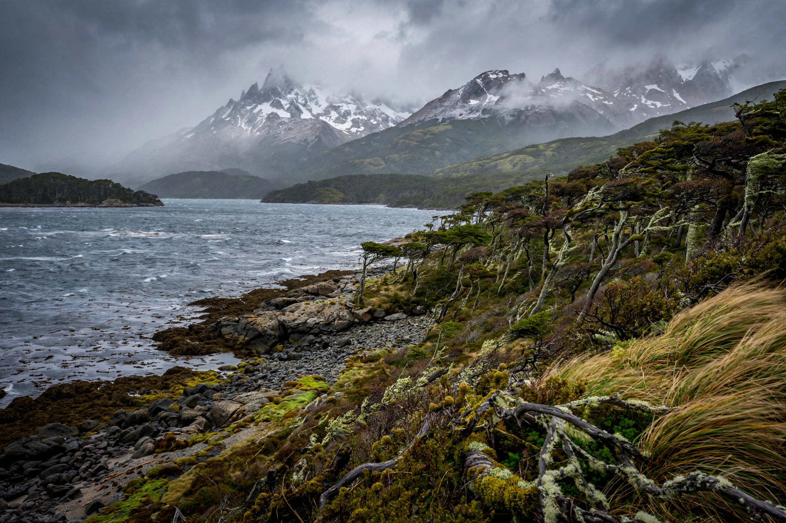

| Tierra del Fuego | |
|---|---|
 | |
| Location | Southern tip of South America |
| Separated by | Strait of Magellan |
| Main island | Isla Grande de Tierra del Fuego (48,100 km²) |
| Divided between | Argentina (east) and Chile (west) |
| Principal cities | Ushuaia, Río Grande, Porvenir |
Tierra del Fuego (Spanish for "Land of Fire") is an archipelago off the southernmost tip of the South American mainland, separated from it by the Strait of Magellan. The principal island, Isla Grande de Tierra del Fuego, is divided between Argentina in the east and Chile in the west, a boundary settled by treaty in 1881; the archipelago also includes Cape Horn and the Diego Ramírez Islands at the southern extreme of the Americas. The total land area is about 73,753 km².
The name derives from the fires of the indigenous inhabitants, seen by Ferdinand Magellan's expedition in 1520 — the first Europeans to pass the strait, during the first circumnavigation of the earth — and from the reports of smoke and flames along the shores. Charles Darwin visited aboard HMS Beagle in the 1830s (the Beagle Channel is named for that ship) and wrote influential, and now much-criticised, accounts of the Fuegian peoples. Ushuaia, on the Beagle Channel, is commonly promoted as the southernmost city in the world.
The archipelago was home to several indigenous groups — the Selk'nam (Ona) and Haush of the interior, and the maritime Yaghan (Yámana) and Kawésqar (Alacalufe) — whose ancestors arrived more than 10,000 years ago. In the late 19th century, sheep ranching, gold prospecting and introduced diseases devastated them: the Selk'nam suffered an outright genocide at the hands of settlers and ranchers, and by the early 20th century the full-blooded indigenous population had nearly vanished. Cristina Calderón, the last native speaker of Yaghan, died in 2022.
The western islands are mountainous, wet and forested (the tail of the Andes, including the Darwin Cordillera), while the north-east of Isla Grande is dry Patagonian steppe. The climate is subpolar oceanic, famously windy and changeable. The economy rests on sheep farming, oil and gas extraction around Río Grande, fishing, and tourism centred on Ushuaia, the "End of the World" — gateway for Antarctic cruises and for Tierra del Fuego National Park.
See also: Circumnavigation · Strait of Magellan · Antonio Pigafetta · Cape Horn